058 — Cloud KMS, Secret Manager y Security Command Center
Parte: 04 — Google Cloud: plataforma esencial
Nivel: intermedio · Horas estimadas: 4
Laboratorio: security · Estado: EXECUTABLE_CORE
🎯 Propósito
Cerrar la seguridad de la plataforma de Google Cloud con las tres piezas que la sostienen, y con dos precisiones que producen incidentes reales: un secreto referenciado como variable de entorno se resuelve al arrancar la instancia, así que rotarlo no cambia nada hasta que se despliega otra vez; y una clave rotada no deja de usarse, porque lo ya cifrado sigue necesitando la versión antigua. La clase 046 dejó la disciplina —cada control con su prueba negativa—; aquí cambian los mecanismos y aparece una herramienta que ninguna de las dos plataformas anteriores tenía: la simulación de rutas de ataque.
📚 Resultados de aprendizaje
Al finalizar podrás:
- Estructurar claves en anillos y versiones sabiendo qué se puede destruir y qué no se puede borrar nunca.
- Rotar una clave entendiendo qué queda cifrado con la versión anterior y cuándo se puede destruir.
- Referenciar secretos desde un servicio sabiendo cuándo se resuelven y qué exige una rotación.
- Priorizar hallazgos de seguridad por ruta de ataque explotable en vez de por puntuación.
- Verificar cada control de la parte con una prueba negativa ejecutada.
🧩 Conceptos centrales
| Concepto | Comprensión verificable |
|---|---|
anillo de claves |
Agrupación de claves ligada a una ubicación. No se puede borrar, ni él ni las claves que contiene: solo se destruyen versiones. Una jerarquía mal pensada se queda para siempre. |
versión de clave |
Material criptográfico concreto. La rotación crea una versión primaria nueva y no reescribe lo ya cifrado, que sigue dependiendo de la anterior. |
destrucción programada |
Una versión no se borra al instante: entra en un plazo —24 horas por defecto— durante el cual se puede restaurar. Es la red de seguridad ante el error irreversible. |
nivel de protección |
Software, HSM o externo. El externo mantiene la clave fuera de Google, lo que satisface requisitos de soberanía y acopla la disponibilidad del dato a la de un sistema ajeno. |
referencia a secreto |
Forma en que un servicio obtiene un secreto. Como variable de entorno se resuelve al arrancar la instancia; montado como fichero puede releerse en cada lectura. |
simulación de rutas de ataque |
Cálculo de los caminos por los que un atacante podría llegar a un recurso valioso. Prioriza por explotabilidad real, no por número de hallazgos. |
🧠 Modelo mental
Un proyecto de Google Cloud es la unidad práctica de API, cuota, IAM y facturación; la organización aporta la política heredable.
Aplicado a esta clase, separa siempre cuatro planos: intención (qué necesita el usuario), configuración (qué declaramos), estado observado (qué existe de verdad) y evidencia (cómo sabemos que cumple). Confundirlos produce diseños que se ven correctos en un diagrama pero fallan al operar.
🗺️ Flujo de razonamiento

📖 Desarrollo
1. Claves: lo que no se borra y lo que sí se destruye
La jerarquía de Cloud KMS tiene tres niveles y una propiedad que sorprende:
anillo de claves ligado a una ubicación · NO SE PUEDE BORRAR
clave NO SE PUEDE BORRAR
versión sí se puede destruir, con plazo
Las dos primeras líneas son literales: un anillo creado por error se queda en el proyecto para siempre. No cuesta dinero vacío y sí ensucia el inventario, así que la estructura conviene decidirla antes de crear la primera:
anillo por ENTORNO y UBICACIÓN, no por equipo
kr-prod-europe-west1
clave por PROPÓSITO
k-almacenamiento cifra buckets
k-datos cifra Cloud SQL
k-aplicacion cifra a nivel de aplicación
El criterio para separar claves es el mismo de la clase 046 y tiene consecuencias operativas: una clave es la unidad de revocación. Todo lo que cifre la misma clave se vuelve inaccesible a la vez cuando se revoca. Si eso incluye la evidencia de auditoría —como ocurrió en el simulacro de la clase 048—, el radio de impacto es mayor del previsto.
La destrucción de una versión tiene una protección que conviene conocer porque salva errores:
$ gcloud kms keys versions destroy 3 --key k-almacenamiento \
--keyring kr-prod-europe-west1 --location europe-west1
# → estado DESTROY_SCHEDULED durante el plazo configurado
$ gcloud kms keys versions restore 3 --key k-almacenamiento \
--keyring kr-prod-europe-west1 --location europe-west1
El plazo por defecto es de 24 horas y puede fijarse hasta 120 días al crear la clave. Es el equivalente funcional de la protección contra purga de la clase 046, con una diferencia importante: aquí es el comportamiento por defecto, no un interruptor que alguien tiene que acordarse de activar.
Y los niveles de protección, en orden de control y de acoplamiento:
software la clave la custodia Google, en software
HSM módulo de hardware certificado, gestionado por Google
externo la clave vive FUERA de Google, en un gestor propio o de un tercero
Google nunca la tiene: pide la operación criptográfica
El externo satisface requisitos de soberanía que ningún otro nivel cubre, y trae una consecuencia que hay que aceptar por escrito antes de elegirlo: la disponibilidad del dato pasa a depender de un sistema que no está en esta nube. Si el gestor externo no responde, los datos no se pueden leer. Es un intercambio legítimo cuando la obligación existe y es un riesgo gratuito cuando se elige por prudencia genérica.
Y la rotación, con la precisión que la clase 046 ya estableció y que aquí tiene una consecuencia concreta:
$ gcloud kms keys update k-almacenamiento --keyring kr-prod-europe-west1 \
--location europe-west1 --rotation-period 90d --next-rotation-time 2026-09-01T00:00:00Z
rotar crea una versión nueva y la hace primaria
lo NUEVO se cifra con ella
no rota lo ya cifrado, que sigue dependiendo de la versión anterior
De ahí la regla que evita el error irreversible: una versión antigua no se destruye hasta haber recifrado lo que dependía de ella, y comprobarlo no es opcional:
$ gcloud kms keys versions list --key k-almacenamiento \
--keyring kr-prod-europe-west1 --location europe-west1 \
--format="table(name.basename(), state, createTime)"
En los servicios que soportan clave del cliente, el recifrado se dispara reescribiendo el objeto o mediante la operación que el servicio ofrezca. Y hasta que termine, destruir la versión antigua deja datos ilegibles — que es la forma más cara de descubrir que «rotado» no significa «ya no se usa».
2. Secretos: cuándo se resuelven decide si la rotación sirve
Secret Manager guarda secretos con versiones inmutables y un alias latest. Y la decisión que produce el incidente de esta clase no es dónde se guarda, sino cómo lo consume el servicio.
Hay tres formas y no son equivalentes:
A · variable de entorno con referencia
la plataforma resuelve el valor AL ARRANCAR la instancia
→ rotar el secreto NO cambia nada hasta que arranque una instancia nueva
B · fichero montado con referencia
el fichero se puede releer
→ una rotación se recoge sin redesplegar, si la aplicación relee
C · llamada a la API desde la aplicación
control total, y hay que gestionar caché y cuota
La forma A es la más usada porque es la más cómoda, y su comportamiento sorprende siempre:
$ gcloud run deploy svc-pedidos \
--set-secrets "DB_PASSWORD=db-password:latest"
latest se evalúa cuando la instancia arranca. Con instancias vivas de antes de la rotación y otras nuevas, el servicio usa dos contraseñas a la vez durante horas, y la mitad de las peticiones falla. El síntoma —errores intermitentes de autenticación que se corrigen solos con el tiempo— es difícil de atribuir.
Las dos correcciones, según el caso:
rotación planificada desplegar una revisión nueva como último paso
de la rotación: es un cambio de tráfico, segundos
rotación de emergencia fichero montado y relectura ante fallo de autenticación
Y la segunda línea repite el patrón de dos credenciales de la clase 046, que sigue siendo la única forma de rotar sin ventana de fallo:
1. dos credenciales activas: primaria y secundaria
2. rotar la secundaria, que nadie usa
3. desplegar la revisión que apunta a la secundaria ya rotada
4. rotar la antigua primaria, ahora libre
La forma C tiene un riesgo conocido y es la tercera vez que aparece en el programa: leer el secreto en cada petición agota la cuota del proyecto y el fallo se manifiesta como error de la base de datos, no del gestor de secretos. La corrección es la misma que en la clase 046: cachear en memoria con vencimiento y releer solo ante un fallo de autenticación.
Dos decisiones más que se toman al crear el secreto y no se cambian:
$ gcloud secrets create db-password \
--replication-policy user-managed --locations europe-west1,europe-west4
La política de replicación gestionada por el usuario permite elegir las regiones, que es el mismo requisito de residencia que la clase 053 resolvió eligiendo la birregión y que la clase 041 no podía resolver. Es coherente con el resto de la plataforma y hay que decidirlo al crear, porque después no cambia.
Y una limitación que conviene decir sin adornos, porque es una diferencia real frente a otra plataforma del programa: Secret Manager no rota por sí solo. Puede publicar una notificación en un tema de Pub/Sub según un calendario, y la rotación —conectarse al motor, generar la credencial nueva, guardarla como versión— la escribe el equipo.
$ gcloud secrets update db-password \
--next-rotation-time 2026-09-01T03:00:00Z --rotation-period 2592000s \
--topic projects/$P/topics/rotacion-secretos
Eso es un disparador, no una rotación. Compararlo con la rotación integrada de otros gestores es justo: aquí hay que construir la función que la ejecuta, y conviene presupuestarlo en lugar de descubrirlo.
3. Priorizar por ruta de ataque, no por número de hallazgos
Security Command Center hace tres cosas y se paga por niveles:
inventario de recursos y hallazgos de configuración nivel básico
detección de amenazas (eventos, contenedores, máquinas) niveles de pago
simulación de RUTAS DE ATAQUE y cumplimiento normativo niveles de pago
La tercera es la que no tenía equivalente en las dos plataformas anteriores y la que cambia cómo se prioriza.
Un escáner de configuración produce cientos de hallazgos y los ordena por severidad genérica. La simulación de rutas hace otra cosa: parte de los recursos que declaras valiosos y calcula los caminos por los que alguien podría llegar a ellos, atravesando permisos, suplantaciones, reglas de red y servicios expuestos.
escáner clásico "este bucket no tiene registro de acceso" severidad media
"esta máquina tiene IP pública" severidad media
…320 hallazgos más
ruta de ataque internet → svc-informes (sin autenticar)
→ cuenta de servicio sa-informes
→ suplantación de sa-datos
→ lectura de gs://cls-facturas
exposición del recurso valioso: ALTA
Esa segunda forma es exactamente el tipo de cadena que la clase 050 obligó a buscar a mano con el analizador de políticas. Aquí se calcula sola y se recalcula, que es la diferencia entre una auditoría puntual y un control continuo: una cuenta de servicio creada la semana siguiente a la auditoría aparece sin que nadie repita el ejercicio.
La priorización que se deduce es más honesta que una puntuación:
se corrige primero lo que ESTÁ en una ruta hacia un recurso valioso
después, lo que aumentaría la superficie si algo más fallara
al final, lo que es una buena práctica sin camino conocido
Y conviene decir lo que cuesta, porque es una partida real: los niveles de pago se facturan en proporción al gasto de la organización o por recurso protegido, así que la decisión es de alcance —qué carpetas y qué proyectos— exactamente como los planes de la clase 046. Activarlo en toda la organización sin mirar el inventario repite el error que allí costó 2.460 dólares al mes.
Y las detecciones tienen la misma exigencia que cualquier otro control:
activar una detección no demuestra nada
lo demuestra provocarla y ver el hallazgo
Una prueba segura y estándar para la detección de amenazas en la capa de identidad es crear una clave de cuenta de servicio en un proyecto donde la política de la clase 050 lo prohíbe, y comprobar que aparece el hallazgo correspondiente; para la de contenedores, ejecutar un binario desde un directorio temporal dentro de un contenedor. Lo importante no es la prueba concreta sino la regla: la fecha de la última verificación de cada detección debe existir y ser reciente.
4. La lista de pruebas negativas de la parte 04
La clase 046 estableció que un control sin prueba negativa es una afirmación. Cerrar la parte 04 exige la lista equivalente, y conviene compararla con la de allí porque las pruebas se parecen y los mensajes de error no:
control prueba negativa que lo demuestra
─────────────────────────────────────────────────────────────────────────────
bucket no público conceder a allUsers → 412, violación de
restricción (049, 053)
sin claves de cuenta de servicio crear una clave → denegado por política (050)
federación acotada por sujeto desde otro repositorio → permiso denegado (050)
salida a internet cerrada curl con tiempo límite → agota (051)
firewall dirigido por identidad prueba de conectividad → UNREACHABLE (051)
Cloud SQL sin IP pública conexión directa → tiempo agotado (054)
servicio interno no público curl sin testigo → 403 (055)
cola de fallidos operativa publicar un mensaje que falla →
aparece en el tema de fallidos (056)
auditoría de acceso a datos activa leer un dato y encontrar la entrada (057)
destrucción de versión de clave programar y restaurar dentro del plazo
rotación de secreto sin corte rotar con tráfico en curso: 0 errores
recuperación de bucket borrar y restaurar uno de prueba (053)
Doce afirmaciones con doce comprobaciones. Y la comparación de los tres proveedores en un aspecto concreto —qué protege la plataforma por defecto y qué hay que activar— es lo que el proyecto de la clase 060 tiene que poder resumir:
```text AWS Azure Google Cloud borrado de contenedor protegido opcional 2 interruptores por defecto auditoría de administrador 90 días 90 días 400 días, gratis auditoría de acceso a datos opcional opcional apagada, cara claves: destrucción con ventana opcional opcional por defecto creación de credenciales de larga duración bloqueable por política sí sí sí rutas de ataque calculadas — — integrado rotación de secretos integrada sí parcial hay que construirla
La última fila es la única en la que esta plataforma queda por detrás de forma clara, y merece figurar como riesgo declarado en lugar de omitirse.
Y la prueba de segundo orden que la clase 046 introdujo sigue siendo la más rentable: **comprobar que el control sigue activo pasado un tiempo**. Aquí el mecanismo son las políticas de organización de la clase 049 y los hallazgos continuos de Security Command Center, que detectan la desviación en horas en vez de en la siguiente auditoría. Los controles no se revierten por malicia: se revierten porque alguien recreó un recurso desde una plantilla vieja, y esa es una causa que ninguna norma escrita evita.
### 5. Lo que este programa ya puede afirmar sobre seguridad en la nube
Con tres plataformas recorridas, hay conclusiones que ya no dependen del proveedor y conviene enunciarlas, porque son las que se llevan a las partes 11 y 22.
**Primera: las credenciales de larga duración son el problema, y las tres plataformas ofrecen la misma salida.** Rol de instancia, identidad administrada, cuenta de servicio adjunta; federación con sujeto acotado para lo externo. La prueba negativa ha sido idéntica tres veces y ha fallado dos de tres la primera vez que se ejecutó.
**Segunda: el permiso suma y lo que resta vive en otro sistema.** Políticas de control de servicios, Azure Policy, políticas de organización y de denegación. Los tres producen un error **que no habla de permisos**, y leerlo ahorra buscar en el sistema equivocado. Tres vocabularios, un método.
**Tercera: el gobierno guarda la puerta y no limpia la casa.** En las tres, imponer una restricción no corrige lo existente, y la secuencia correcta ha sido siempre inventariar, corregir y después imponer. Hacerlo al revés produjo en la clase 046 un panel en verde con catorce recursos incumpliendo.
**Cuarta: el control de la clave es control real y responsabilidad real.** Poder revocar significa poder dejar un dato ilegible, y el radio de impacto se estima mal siempre que un mismo recurso sirve a varios propósitos — como demostró el simulacro de la clase 048.
**Quinta, y la que más veces se salta:** un informe que dice «se ha habilitado X» no es comparable con uno que dice «se ha habilitado X y este es el error que devuelve al intentar lo que impide». La primera forma es una intención. La segunda es evidencia, y es la única que sobrevive a una auditoría y a un cambio de proveedor.
Lo que queda por comprobar, y que la clase 060 tiene que responder con datos: si la lista de doce pruebas negativas de esta parte se puede **generar** a partir de la línea base en lugar de escribirse a mano cada vez. Si la respuesta es que sí, el trabajo de seguridad de la cuarta plataforma será una fracción del de esta — que es exactamente la promesa que este programa hizo en la parte 01 y que ya se puede empezar a medir.
## 🔬 Ejemplo trabajado
**CloudShop cierra la seguridad de su plataforma en Google Cloud. Llega con la línea base de la clase 048 y la lista de pruebas negativas de la 046, así que tres controles se montan sin incidentes. Los cuatro problemas de este mes son mecanismos nuevos mal entendidos.**
**Lo que se montó sin incidentes, por venir escrito:**
```text
sin credenciales de larga duración: bloqueadas por política (046 → 050)
inventariar, corregir y después imponer (046 → 049)
separar por propósito lo que comparte clave (048 → 058)
cada control con su prueba negativa (046 → 058)
La tercera venía directamente del simulacro de la clase 048, donde revocar una clave detuvo tres servicios en vez de uno. Aquí las claves se separaron desde el principio:
k-facturas cifra el bucket de facturas
k-auditoria cifra el archivo de registros
k-datos cifra Cloud SQL
Problema 1 — la mitad de las instancias con la contraseña antigua.
Se rota la contraseña de la base de datos a las 03:00. A las 09:20 siguen apareciendo errores intermitentes de autenticación.
$ gcloud run services describe svc-pedidos \
--format="value(spec.template.spec.containers[0].env)"
DB_PASSWORD → secretKeyRef: db-password:latest
La referencia se resuelve al arrancar la instancia. Las instancias vivas desde antes de las 03:00 seguían con la contraseña anterior; las nuevas, con la nueva. Seis horas con dos credenciales en circulación.
```text antes después referencia al secreto variable de entorno fichero montado relectura ante fallo de autenticación no sí rotación cambiar la versión dos credenciales: rotar la secundaria, desplegar, rotar la otra errores durante la rotación siguiente 3.412 0
**Problema 2 — errores 500 que parecían de la base de datos. Tercera vez.**
```text
RESOURCE_EXHAUSTED: Quota exceeded for quota metric
'Access secret versions' of service 'secretmanager.googleapis.com'
Un servicio nuevo leía el secreto en cada petición. Es el mismo incidente de la clase 046 con Key Vault y de la 051 con los puertos de traducción: el mismo defecto de código produce el mismo fallo en la tercera plataforma.
```text antes después lecturas del gestor de secretos 1 por petición 1 cada 30 min relectura ante fallo de auth no sí errores 500 en el pico 4,1 % 0,0 %
**Problema 3 — una versión de clave destruida por error, recuperada en la ventana.**
Durante una limpieza, alguien programó la destrucción de la versión 2 de `k-facturas` creyendo que la rotación a la versión 3 la había dejado sin uso.
```bash
$ gcloud kms keys versions list --key k-facturas --keyring kr-prod-europe-west1 \
--location europe-west1 --format="table(name.basename(), state)"
2 DESTROY_SCHEDULED
3 ENABLED
El 71 % de los objetos del bucket seguían cifrados con la versión 2. Destruirla los habría dejado ilegibles de forma permanente.
$ gcloud kms keys versions restore 2 --key k-facturas \
--keyring kr-prod-europe-west1 --location europe-west1
```text antes después plazo de destrucción programada 24 h (por defecto) 30 días recifrado tras rotar no había proceso automatizado comprobación previa a destruir ninguna obligatoria: objetos por versión objetos aún cifrados con la versión 2 71 % 0 %
La ventana de destrucción salvó el caso. Es el mismo papel que la protección contra purga de la clase 046 y con una diferencia importante: **aquí venía puesta**. El equipo la amplía a 30 días de todos modos, porque 24 horas no cubren un fin de semana.
**Problema 4 — una ruta de ataque que la auditoría de la clase 050 no podía ver.**
Security Command Center señala un camino con exposición alta:
```text
internet → svc-informes (desplegado sin autenticación hace 9 días)
→ cuenta de servicio sa-informes-v2
→ suplantación de sa-datos
→ lectura de gs://cls-facturas
La auditoría de suplantaciones se había hecho tres semanas antes y estaba limpia. sa-informes-v2 y el servicio sin autenticar se crearon después.
```text antes después revisión de rutas de suplantación puntual, manual continua servicios sin autenticación 2 de 9 0 de 9 cadenas de suplantación hacia datos 1 0 tiempo desde la creación hasta la detección — 4 horas
La diferencia no es la herramienta: es que **una auditoría es una foto y un hallazgo continuo es una película**. La clase 050 obligó a mirar los caminos; esta hace que se miren solos.
**Y una decisión documentada como riesgo aceptado.**
Se evaluó el gestor de claves externo para las facturas, por un requisito de soberanía que resultó ser una preferencia y no una obligación:
```text
lo que aporta la clave nunca está en Google
lo que cuesta la disponibilidad del dato depende de un sistema externo
y su indisponibilidad hace ilegible el bucket
decisión no se adopta; se documenta con la condición que
obligaría a revisarlo: una obligación contractual explícita
Resumen del cierre de seguridad:
```text antes después claves por propósito 1 para todo 3 plazo de destrucción de versiones 24 h 30 días objetos cifrados con una versión programada para destrucción 71 % 0 % errores durante una rotación de secreto 3.412 0 errores 500 por cuota del gestor de secretos 4,1 % 0,0 % servicios sin autenticación 2 de 9 0 de 9 rutas de ataque hacia datos valiosos 1 0 controles con prueba negativa ejecutada 0 de 12 12 de 12
**La lección que esta clase traslada al proyecto de la clase 060**: los cuatro problemas fueron de mecanismos nuevos, y dos de ellos eran el mismo defecto de código que ya había fallado en dos plataformas anteriores. Lo que evitó los otros tres controles fue una lista escrita, no la experiencia de nadie. **La seguridad de la tercera plataforma costó menos porque la segunda dejó doce pruebas escritas**, y ese es exactamente el rendimiento que este programa prometió medir.
## 🧪 Laboratorio guiado
Ejecuta desde la raíz:
```bash
python classes/part-04-gcp-core-platform/058-cloud-kms-secret-manager-y-security-command-center/lab.py
El laboratorio selecciona el motor de práctica security y produce
lab_result.json. El escenario, sus comprobaciones y el artefacto esperado corresponden a
esta clase; no requiere credenciales y deja explícito qué debe revalidarse en un sandbox real.
- Lee
exercise.stepsy formula una predicción antes de ejecutar. - Ejecuta la práctica y verifica todos los elementos de
checks. - Provoca el caso de
negative_testy explica la señal observada. - Materializa
controles-gcpenevidence/usando la plantilla indicada. - Para proveedor real, sigue
sandbox.requires, registra costo y ejecutadestroy.
Evidencia esperada
El artefacto principal es un control con amenaza, mitigación y evidencia. Además, la entrega debe incluir el comando ejecutado, la salida estructurada y una conclusión que no exceda lo observado.
🏆 Reto verificable
Construye controles-gcp para el caso CloudShop. Incluye una alternativa descartada,
un supuesto que pueda falsarse, una prueba de fallo y una decisión de rollback.
✅ Criterio de aceptación
- [ ]
lab.pytermina con código 0 y genera JSON válido. - [ ] La entrega conecta al menos tres requisitos con mecanismos verificables.
- [ ] Existe una prueba positiva y una prueba negativa con evidencia.
- [ ] Seguridad, costo y operación aparecen como decisiones, no como anexos.
- [ ] Se declara una limitación y una condición que obligaría a revisar el diseño.
- [ ] Otra persona puede repetir el recorrido sin conocimiento tácito.
⚠️ Errores frecuentes
| Síntoma | Causa probable | Corrección |
|---|---|---|
| Tras rotar un secreto, parte de las peticiones sigue fallando durante horas | La referencia como variable de entorno se resuelve al arrancar la instancia | Móntalo como fichero y relee ante fallo de autenticación, o despliega una revisión nueva como último paso de la rotación. |
| Errores 500 que parecen de la base de datos y no lo son | Se lee el secreto en cada petición y se agota la cuota del proyecto | Cachea en memoria con vencimiento y relee solo ante un fallo de autenticación. |
| Destruir una versión de clave deja datos ilegibles | La rotación no recifra lo existente: sigue dependiendo de la versión anterior | Comprueba cuántos objetos usan cada versión antes de destruir, amplía el plazo de destrucción y automatiza el recifrado. |
| Un anillo o una clave creados por error no se pueden eliminar | En Cloud KMS solo se destruyen versiones; anillos y claves son permanentes | Decide la jerarquía antes de crear la primera: anillo por entorno y ubicación, clave por propósito y unidad de revocación. |
| Una auditoría de permisos limpia deja pasar una ruta de acceso a datos | La auditoría es una foto y los recursos nuevos se crean después | Usa la simulación de rutas de ataque como control continuo y corrige primero lo que está en un camino hacia un recurso valioso. |
| Se espera rotación automática de secretos y no ocurre | Secret Manager notifica según un calendario pero no ejecuta la rotación | Escribe la función de rotación disparada por la notificación y presupuesta ese trabajo; declara el riesgo mientras no exista. |
🛡️ Seguridad, ética y costo
Trabaja con cuentas propias o sandboxes autorizados. No publiques secretos, identificadores reales ni datos personales. Antes de crear recursos pagos define presupuesto, etiquetas y comando de destrucción; después verifica que no queden recursos huérfanos. Los ejemplos locales enseñan contratos, pero no certifican cumplimiento ni disponibilidad de producción.
❓ Preguntas de comprobación
- ¿Qué no se puede borrar nunca en Cloud KMS y qué implica para el diseño de la jerarquía?
- Rotas una clave. ¿Qué queda cifrado con la versión anterior y cuándo puedes destruirla?
- ¿Cuándo se resuelve un secreto referenciado como variable de entorno, y qué incidente produce durante una rotación?
- ¿En qué se diferencia priorizar por ruta de ataque de priorizar por puntuación de seguridad?
- Enumera cinco controles de la parte 04 con la prueba negativa concreta que demuestra cada uno.
🔗 Referencias
- Google Cloud (2025). Cloud KMS resource hierarchy — anillos, claves y versiones, y qué no se puede eliminar. https://cloud.google.com/kms/docs/resource-hierarchy
- Google Cloud (2025). Key rotation — versión primaria, datos ya cifrados y recifrado. https://cloud.google.com/kms/docs/key-rotation
- Google Cloud (2025). Use Secret Manager with Cloud Run — referencias como variable de entorno y como volumen montado. https://cloud.google.com/run/docs/configuring/services/secrets
- Google Cloud (2025). Secret rotation — notificaciones programadas y qué hay que construir. https://cloud.google.com/secret-manager/docs/secret-rotation
- Google Cloud (2025). Attack path simulations in Security Command Center — exposición de recursos valiosos y priorización. https://cloud.google.com/security-command-center/docs/attack-exposure-learn
- Documentación oficial vigente del servicio implementado; registra URL y fecha de consulta.
📥 Descargar: Parte 04 en PDF · Recorrido de Google Cloud en PDF · Manual integral